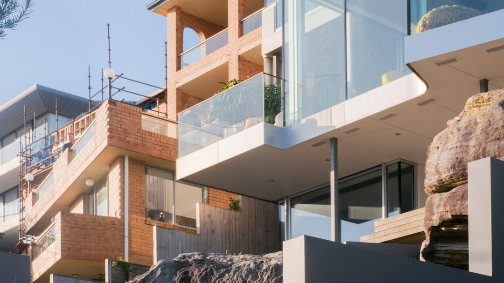

Sydney renovation planning starts with scope, approvals and written pricing. The source page says a cosmetic refresh of a few rooms can sit in the tens of thousands, while a whole-home renovation with structural change commonly starts around $150,000 and can run into the several hundred thousands. Kitchen and bathroom costs depend on layout change, cabinetry, fixtures, tiling and services, with AS 3740 waterproofing required for compliant bathroom work.
For homeowners comparing home renovations sydney options, the practical job is to define scope, likely approvals, access constraints and quote inputs before inviting a builder to price the work.
Home Renovations Sydney Explained
Renovation Sydney frames early planning around the type of project before the quote stage: whole-home renovation, kitchen, bathroom, extension, granny flat, heritage or terrace work. That order is useful because the same design taste can produce very different building tasks once structure, approvals, access and finish quality are considered together.
A terrace, apartment, harbourside home, beachside unit or project home can each raise a different question before pricing. The source page does not turn those property types into fixed rules. It treats them as prompts for better scoping: what needs to change, whether services or structure are involved, whether approval issues are likely, and what information a builder needs before a written quote is meaningful.
- Write the suburb or postcode, because council pathway and site context may affect the next conversation.
- Separate cosmetic work from layout change, structural change and services upgrades.
- Record known constraints such as access, heritage, apartment rules or likely approvals.
- Ask what exclusions should appear in the written quote before work begins.
Where Cost Signals Usually Come From
The published cost guidance is deliberately broad. A cosmetic refresh of a few rooms can sit in the tens of thousands. A whole-home renovation with structural change in Sydney commonly starts around $150,000 and can move into the several hundred thousands. The reliable figure is still a written fixed-price quote for the specific property, scope and finish level.
For kitchens, the source page distinguishes a budget refresh from a full kitchen with new cabinetry, benchtops, appliances and services updates. Premium custom joinery, integrated appliances and a butler's pantry are described as higher again. For bathrooms, the main cost drivers are room size, tiling extent, layout movement and fixture quality. Moving plumbing, enlarging the room or choosing premium finishes increases the price compared with a same-layout renovation.
Materials are described as the largest single cost, with labour a significant share on top. That makes product selections, cabinetry detail, tile extent and service changes quote questions, not afterthoughts.
Approvals, Structure And Compliance Questions
The source page repeatedly places approvals beside structure and finish quality. That is a useful discipline for home renovations in Sydney because an attractive concept can still fail as a priced scope if the builder conversation ignores council pathways, waterproofing, structural work or property-specific constraints.
Bathroom work has one clear compliance point in the supplied material: waterproofing to Australian Standard AS 3740 is a non-negotiable part of a compliant bathroom. For other approval matters, the safest reader action is to ask targeted questions rather than assume a pathway. A Paddington terrace under a conservation overlay, a Castle Hill second-storey addition and a Cronulla beachside kitchen are given as examples of different renovation contexts, not interchangeable projects.
- Ask whether the work is cosmetic, structural, services-related or a combination.
- Ask which approval pathway should be checked before pricing is finalised.
- Ask how waterproofing, plumbing and electrical changes will be specified in the quote.
- Ask what documentation will form part of the written contract.
Who This Applies To
This guide is most relevant to homeowners who are still shaping the brief, not readers who already have drawings, approvals and a complete specification. It suits owners weighing a whole-home renovation, kitchen upgrade, bathroom renovation, extension, granny flat, heritage or terrace project and needing to know what belongs in the first builder conversation.
Apartment owners may need to make access and body-related constraints visible early. Terrace and heritage-style projects may need sharper questions about approvals and existing structure. Owners of project homes or larger suburban houses may be comparing whether a layout reconfiguration, ground floor extension or first floor addition is the real scope. The common thread is that quote quality depends on the facts supplied before the site visit.
For a second crawlable reference point on the same broad topic, this Sydney renovation planning guide also keeps the focus on project definition rather than decoration alone.
What To Bring Before Requesting A Quote
A useful renovation enquiry is not a finished specification, but it should give enough shape for a builder-led review. The source page asks for suburb, project type, rough scope and anything unusual about access, heritage or approvals. It also emphasises clear project details before the site visit, written quote and build decision.
Prepare a short brief that names the rooms involved, what currently feels broken or outdated, whether the layout needs to move, and whether structural change might be part of the work. Include rough budget expectations, because the published guidance shows that a cosmetic refresh and a structural whole-home renovation sit in very different cost bands.
- Describe the desired outcome in plain language.
- List the must-fix problems before the nice-to-have finishes.
- Note known constraints, including access, apartment context, heritage concern or likely approval issue.
- Ask for the scope, price, programme and exclusions to be set out in writing.
- Define the scope. Name the rooms, project type and whether the work is cosmetic, layout-changing or structural.
- Record property constraints. Write down suburb, access issues, apartment context, heritage concern or any likely approval question.
- Set budget context. Use the published broad cost bands only as a starting point before requesting a property-specific quote.
- Request written detail. Ask for scope, price, programme and exclusions to be documented before any build decision.
| Scenario | Likely quote focus | Question to ask |
|---|---|---|
| Cosmetic room refresh | Finishes, surfaces and limited room updates | Which existing services and layouts stay unchanged? |
| Kitchen rework | Cabinetry, benchtops, appliances and service updates | Is this a refresh, full replacement or custom joinery project? |
| Bathroom renovation | Layout, tiling extent, fixtures and waterproofing | How will AS 3740 waterproofing be specified? |
| Whole-home structural work | Layout reconfiguration, structure, services and finishes | What approvals or structural checks are needed before a fixed price? |
Common questions
How much should I budget for a Sydney home renovation? The source page says a cosmetic refresh of a few rooms can sit in the tens of thousands. A whole-home renovation with structural change commonly starts around $150,000 and can move into the several hundred thousands.
What makes a kitchen renovation cost more? The supplied guidance points to cabinetry material, benchtop choice, appliance level and the amount of plumbing and electrical work. Premium custom joinery, integrated appliances and a butler's pantry sit above a basic refresh.
What should I ask about bathroom work? Ask whether the layout is staying the same, how much tiling is included, what fixtures are allowed for, and how waterproofing will be handled. The source page states AS 3740 waterproofing is required for a compliant bathroom.
When should approvals be discussed? Early. The source page says council pathways, waterproofing and structural work should be considered upfront so the renovation path is clearer before pricing.
This guide covers early renovation scoping, cost signals, approval questions and quote preparation for Sydney homeowners.